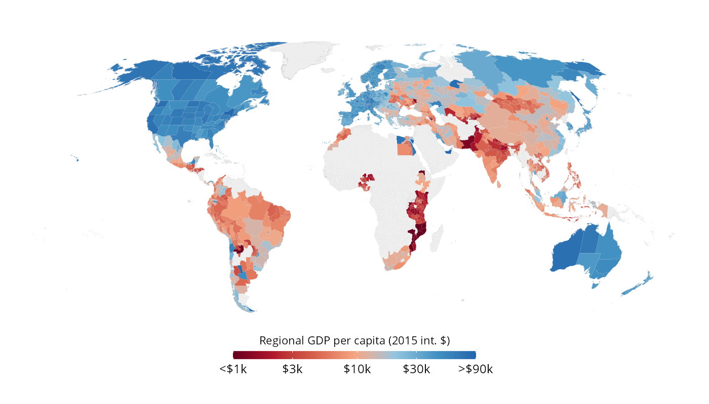

subincomeR is an R package providing tools for accessing and analyzing the MCC-PIK Database Of Sub-national Economic Output (DOSE). DOSE is a comprehensive global dataset of sub-national income covering over 1,600 regions across 83 countries from 1960 to 2020, compiled from official statistical agencies, yearbooks, and academic sources.
DOSE provides data at the first administrative level (GADM-1), which includes subnational divisions like states, provinces, or regions. GADM (Global Administrative Areas Database) is a spatial database of the world’s administrative boundaries, providing a standardized system for defining administrative divisions across countries. For example, GADM-1 corresponds to states in the United States, départements in France, or provinces in China. The dataset is available for download at Zenodo. You can find all the documentation and metadata in Wenz et al. (2023).
Features
- Easy access: download and cache DOSE data locally, including geometries for each region
- Spatial integration: Match coordinates to DOSE regions using GADM boundaries

Installation
You can install the released version of subincomeR from CRAN with:
install.packages("subincomeR")Alternatively, you can install the development version from GitHub with:
# install.packages("pak")
pak::pak("pablogguz/subincomeR")Contributing
Contributions are welcome! Please feel free to submit a pull request. For major changes, please open an issue first to discuss what you would like to change.
References
Wenz, L., Carr, R.D., Kögel, N. et al. (2023). DOSE – Global data set of reported sub-national economic output. Scientific Data, 10, 425. https://doi.org/10.1038/s41597-023-023
Wenz, L., Kotz, M., Kalkuhl, M., Carr, R., Kögel, N., Giesen, C., Reckwitz, A., Wedemeyer, J., & Ziegler, K. (2024). DOSE - Global dataset of reported subnational economic output [Data set]. Zenodo. https://doi.org/10.5281/zenodo.13773040